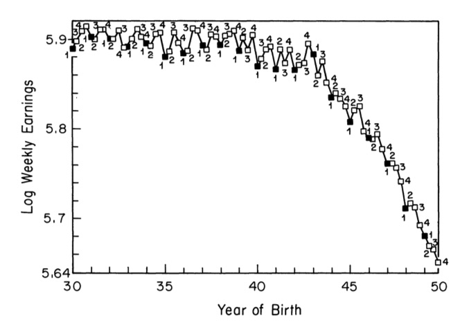

Causal Inference Methods for Policy Evaluation
3-Instrumental Variables
Jacopo Mazza
Utrecht School of Economics
2024
The benefits of Education
Public Expenditure in Education in the OECD
Public Expenditure in Education in the OECD
- OECD countries spent on average 3.3% of their GDP on education in 2020.
- The Netherlands spent 3.1%.
- That’s about 28 billion euros.
The benefits of Education
- Makes people happier
- Makes people healthier
- Reduces poverty
- Increases economic growth
- Reduces crime
- Reduces inequality
- Increases democracy
- Increases social cohesion
- Increases innovation
- Makes people wealthier
Does Education Make You Rich?

Does Education Make You Rich?
Clear positive relation between education and income.
But is it education that causes higher income?
Can we say that: \[E(\text{income}^0|\text{college})=E(\text{income}^0|\text{high school})\text{?}\]
Or is it that people who go to college are different from those who don’t?
The Path to Wealth
The Path to Wealth
UnobservABILITY
- Innate individual ability affects both education and income
- Ability is unobservable
- We cannot control for it
- In the short regression: \[\text{income}=\beta_0+\beta_1\text{education}+\epsilon\] \(\beta_1\) is biased1
- Ability is an omitted variable
The Omited Variable Bias
The real model is: \[\text{income}=\beta_0+\beta_1\text{education}+\beta_2\text{ability}+\epsilon\]
But we estimate: \[\text{income}=\hat{\beta}_0+\hat{\beta}_1\text{education}+\hat{\epsilon}\]
Then: \[\hat{\beta}_1=\beta_1+\beta_2\frac{\text{Cov}(\text{education},\text{ability})}{\text{Var}(\text{education})}\]
Instrumental Variables to the Rescue
The issue is that \(\text{Cov}(\text{education},\text{ability})\neq0\)
But if we had a variable \(Z\) that randomizes education?
We could use \(Z\) as a randomization device affecting education uncorrrelated with ability
This is the idea behind Instrumental Variables (IV)
An IV isolates the variation between treatment and outcome that is uncorrelated with the omitted variable
The Causal Path to Wealth
How IV Estimation Works
- IV estimation mimics a randomized experiment
- IV statistically isolates the part of the treatment that is driven by the instrument:
Use the instrument to explain the treatment
Remove any part of the treatment that is not explained by the instrument
Use the instrument to explain the outcome
Remove any part of the outcome that is not explained by the instrument
Look at the relationship between the remaining part of the outcome and the remaining part of the treatment
The IV Assumptions
- Relevance: The instrument is correlated with the treatment
- Validity: The instrument is uncorrelated with the omitted variable1
- Relevance can be tested just regressing the treatment on the instrument
- Validity is untestable
The Causal Path to Wealth
IV Application
Quarter of Birth as an IV
- Angrist and Krueger (1991)1 use the quarter of birth as an IV for education
- The idea is that the quarter of birth is random
- But it affects the age at which children start school in the US
How the Quarter of Birth Affects Education
People Born Later in the Year Study Longer

People Born Later in the Year Study Longer
Until the 1947 cohort people born later in the year have more years of education
This tells us that quarter of birth affects education
This is the first condition for the IV to be good
This is called the first stage
People Born Later in the Year Earn Higher Wages
People Born Later in the Year Earn Higher Wages
Why would quarter of birth affect wages?
Because it affects education!
The fact that it does tell us that quarter of birth affects income through education
The relationship between quarter of birth and income is the reduced form
The First Stage Estimates
| Outcome variable | Birth Cohort | I | II | III |
|---|---|---|---|---|
| Total schooling | 1930-1939 | -0.124 | -0.86 | -0.015 |
| (0.017) | (0.017) | (0.016) | ||
| 1940–1949 | -0.085 | -0.035 | -0.017 | |
| (0.012) | (0.012) | (0.011) | ||
| High school grad | 1930-1939 | -0.019 | -0.020 | -0.004 |
| (0.002) | (0.002) | (0.002) | ||
| 1940–1949 | -0.015 | -0.012 | -0.002 | |
| (0.001) | (0.001) | (0.001) | ||
| College grad | 1930-1939 | 0.003 | 0.002 | 0.002 |
| (0.002) | (0.002) | (0.002) | ||
| 1940–1949 | 0.004 | 0.000 | 0.000 | |
| (0.002) | (0.002) | (0.002) |
The First Stage Estimates
| Outcome variable | Birth Cohort | I | II | III |
|---|---|---|---|---|
| Total schooling | 1930-1939 | -0.124 | -0.86 | -0.015 |
| (0.017) | (0.017) | (0.016) | ||
| 1940–1949 | -0.085 | -0.035 | -0.017 | |
| (0.012) | (0.012) | (0.011) | ||
| High school grad | 1930-1939 | -0.019 | -0.020 | -0.004 |
| (0.002) | (0.002) | (0.002) | ||
| 1940–1949 | -0.015 | -0.012 | -0.002 | |
| (0.001) | (0.001) | (0.001) | ||
| College grad | 1930-1939 | 0.003 | 0.002 | 0.002 |
| (0.002) | (0.002) | (0.002) | ||
| 1940–1949 | 0.004 | 0.000 | 0.000 | |
| (0.002) | (0.002) | (0.002) |
Angrist and Krueger use three dummies as instruments: \(Z_1\), \(Z_2\), and \(Z_3\)
They estimate the following first stage: \[S_i= X\pi_{10}+\pi_{11}Z_1+\pi_{12}Z_2+\pi_{13}Z_3+\eta_1\]
As expected the coefficients on the dummies are negative and significant
The effect of quarter of birth on college graduation is 0
This is consistent with the fact that quarter of birth affects education for high school dropouts
The Effect of Schooling on Wages
| Independent variable | OLS | 2SLS |
|---|---|---|
| Years of schooling | 0.0711 | 0.0891 |
| (0.0003) | (0.0161) | |
| 9 Year-of-birth dummies | Yes | Yes |
| 8 Region-of-residence dummies | No | No |
After we have the first stage estimates we can finally estimate the effect of education on income
This is the second stage
The OLS estimate is 0.0711
The IV estimate is 0.0891
How to Estimate IV
The Wald Estimator
[Effect of Z on Y] = [Effect of Z on D] * [Effect of D on Y]
\[\rho=\phi\times\lambda\] \[\lambda=\frac{\rho}{\phi}=\frac{ùê∏[ùëå_ùëñ‚îÇùëç_ùëñ=1]‚àíùê∏[ùëå_ùëñ‚îÇùëç_ùëñ=0]}{ùê∏[ùê∑_ùëñ‚îÇùëç_ùëñ=1]‚àíùê∏[ùê∑_ùëñ‚îÇùëç_ùëñ=0]} \]
Two-Stage Least Squares (2SLS)
- The most common way to estimate IV is through 2SLS:
- Regress the treatment on the instrument \[X=\gamma_0+\gamma_1Z+\gamma_2W+\eta\]
- Use the fitted values from the first stage to estimate the second stage: \[Y=\beta_0+\beta_1\hat{X}+\beta_2W+\nu\]
- This is all estimated by OLS
The 2SLS vs. Wald
(2SLS) Estimator can:
Handle multiple IVs
Add control variables
Handle multiple endogenous variables / treatments
Handle continuous endogenous variables / treatments
Include continuous instrumental variables
One vs. Many IVs
One endogenous variable, one IV, and no controls, then:
- Reduced Form:
- comparing means: \(\rho = E[Y_i|Z_i=1] - E[Y_i|Z_i=0]\)
- as a regression: \(Y_i = \alpha_0 + \rho Z_i + \epsilon_{0i}\)
- First Stage:
- comparing means: \(\phi = E[D_i|Z_i=1] - E[D_i|Z_i=0]\)
- as a regression: \(D_i = \alpha_1 + \phi Z_i + \epsilon_{1i}\)
- Second Stage:
- comparing means: \(\lambda = E[Y_i|D_i=1] - E[Y_i|D_i=0]\)
- as a regression: \(Y_i = \alpha_2 + \lambda_{SLS}(\widehat{D_i}) + \epsilon_{2i}\)
Many endogenous variables, many IVs, and controls, then:
First Stage: \(D_i = \alpha_1 + \alpha_{1X} X_i + \phi_1 Z_{1i} + \phi_2 Z_{2i} + \epsilon_{1i}\)
Second Stage: \(Y_i = \alpha_2 + \alpha_{2X} X_i + \lambda_{2SLS}(\widehat{D_i}) + \epsilon_{2i}\)
Reduced Form: \(Y_i = \alpha_0 + \alpha_{0X} X_i + \rho_1 Z_{1i} + \rho_2 Z_{2i} + \epsilon_{0i}\)
The 2SLS in R
To see a practical application of 2SLS in R, we will follow a paper by Card (1995)1 on the effect of education on wages.
Card uses college proximity in the US as an IV for education
Data are from the National Longitudinal Survey of Youth (NLSY) 1966
Data for about 5,500 men
The 2SLS in R
# Load necessary libraries
library(AER)
library(haven)
library(tidyverse)
# Define a function to read data from a specified URL
read_data <- function(df) {
# Construct the full URL
full_path <- paste("https://github.com/scunning1975/mixtape/raw/master/", df, sep = "")
# Read the .dta file from the URL
df <- read_dta(full_path)
return(df)
}
# Use the function to read the 'card.dta' dataset
card <- read_data("card.dta")
# Attach the dataframe to make its columns directly accessible as variables
attach(card)
# Define the variables for the regression analyses
Y1 <- lwage # Dependent variable
Y2 <- educ # Endogenous variable
X1 <- cbind(exper, black, south, married, smsa) # Exogenous variables
X2 <- nearc4 # Instrument
# Perform an OLS regression
ols_reg <- lm(Y1 ~ Y2 + X1) # Y1 is the dependent variable, Y2 and X1 are the independent variables
summary(ols_reg) # Display the results of the OLS regression
# Perform a 2SLS regression
iv_reg = ivreg(Y1 ~ Y2 + X1 | X1 + X2) # Y1 is the dependent variable, Y2 and X1 are the independent variables, X1 and X2 are the instruments
summary(iv_reg) # Display the results of the 2SLS regression
Call:
lm(formula = Y1 ~ Y2 + X1)
Residuals:
Min 1Q Median 3Q Max
-1.59924 -0.23035 0.01812 0.23046 1.36797
Coefficients:
Estimate Std. Error t value Pr(>|t|)
(Intercept) 5.063317 0.063740 79.437 <2e-16 ***
Y2 0.071173 0.003482 20.438 <2e-16 ***
X1exper 0.034152 0.002214 15.422 <2e-16 ***
X1black -0.166027 0.017614 -9.426 <2e-16 ***
X1south -0.131552 0.014969 -8.788 <2e-16 ***
X1married -0.035871 0.003401 -10.547 <2e-16 ***
X1smsa 0.175787 0.015458 11.372 <2e-16 ***
---
Signif. codes: 0 '***' 0.001 '**' 0.01 '*' 0.05 '.' 0.1 ' ' 1
Residual standard error: 0.3702 on 2996 degrees of freedom
(7 observations deleted due to missingness)
Multiple R-squared: 0.305, Adjusted R-squared: 0.3036
F-statistic: 219.2 on 6 and 2996 DF, p-value: < 2.2e-16The 2SLS in R
# Load necessary libraries
library(AER)
library(haven)
library(tidyverse)
# Define a function to read data from a specified URL
read_data <- function(df) {
# Construct the full URL
full_path <- paste("https://github.com/scunning1975/mixtape/raw/master/", df, sep = "")
# Read the .dta file from the URL
df <- read_dta(full_path)
return(df)
}
# Use the function to read the 'card.dta' dataset
card <- read_data("card.dta")
# Attach the dataframe to make its columns directly accessible as variables
attach(card)
# Define the variables for the regression analyses
Y1 <- lwage # Dependent variable
Y2 <- educ # Endogenous variable
X1 <- cbind(exper, black, south, married, smsa) # Exogenous variables
X2 <- nearc4 # Instrument
# Perform an OLS regression
ols_reg <- lm(Y1 ~ Y2 + X1) # Y1 is the dependent variable, Y2 and X1 are the independent variables
summary(ols_reg) # Display the results of the OLS regression
# Perform a 2SLS regression
iv_reg = ivreg(Y1 ~ Y2 + X1 | X1 + X2) # Y1 is the dependent variable, Y2 and X1 are the independent variables, X1 and X2 are the instruments
summary(iv_reg) # Display the results of the 2SLS regression
Call:
ivreg(formula = Y1 ~ Y2 + X1 | X1 + X2)
Residuals:
Min 1Q Median 3Q Max
-1.81301 -0.23805 0.01766 0.24727 1.32278
Coefficients:
Estimate Std. Error t value Pr(>|t|)
(Intercept) 4.162476 0.849590 4.899 1.01e-06 ***
Y2 0.124164 0.049956 2.485 0.01299 *
X1exper 0.055588 0.020286 2.740 0.00618 **
X1black -0.115686 0.050741 -2.280 0.02268 *
X1south -0.113165 0.023244 -4.869 1.18e-06 ***
X1married -0.031975 0.005087 -6.286 3.73e-10 ***
X1smsa 0.147707 0.030895 4.781 1.83e-06 ***
---
Signif. codes: 0 '***' 0.001 '**' 0.01 '*' 0.05 '.' 0.1 ' ' 1
Residual standard error: 0.3843 on 2996 degrees of freedom
Multiple R-Squared: 0.2513, Adjusted R-squared: 0.2498
Wald test: 139.8 on 6 and 2996 DF, p-value: < 2.2e-16 Using College Proximity to Estimate Returns to Education
| OLS | 2SLS | |
|---|---|---|
| Education | 0.071 | 0.124 |
| (0.003) | (0.050) | |
| First Stage Instrument | ||
| College in the county | 0.327 | |
| Robust standard error | (0.082) | |
| F statistic for IV in first stage | 15.767 | |
| N | 3,003 | 3,003 |
Using College Proximity to Estimate Returns to Education
| OLS | 2SLS | |
|---|---|---|
| Education | 0.071 | 0.124 |
| (0.003) | (0.050) | |
| First Stage Instrument | ||
| College in the county | 0.327 | |
| Robust standard error | (0.082) | |
| F statistic for IV in first stage | 15.767 | |
| N | 3,003 | 3,003 |
- The OLS estimate of the return to education is 0.071
- The IV estimate of the return to education is 0.124
- Having a college in the county increases the probability of going to college by 0.327
- The first stage F-statistic is 15.7671
- As a rule of thumb, the first stage F-statistic should be above 10
When Instruments are Weak
The First Stage F-Statistic
- The first assumption of IV is that the instrument is correlated with the treatment
- This is tested by the first stage F-statistic
- A rule of thumb is that the first stage F-statistic should be above 101
- If the first stage F-statistic is below 10, the instrument is weak
The Weak Instruments Problem
- The instrument \(Z\) and the endogenous variable \(X\) need to be strongly correlated
- If the instrument is weak, the IV estimate is biased
- To see why, keep in mind that the IV estimate is \(\hat{\beta}_{IV}=\frac{\text{Cov}(Y,Z)}{\text{Cov}(X,Z)}\)
- If \(\text{Cov}(X,Z)\) is small, we are dividing by a number close to zero
What do instrumental variables estimate?
IV Estimates Are Local
- Remember when in week 1 we talked about 5 types of effects?
- The Average Treatment Effect (ATE)
- The Average Treatment Effect on the Treated (ATT)
- The Average Treatment Effect on the Untreated (ATU)
- The Local Average Treatment Effect (LATE)
- The Intention to Treat (ITT)
- IV estimates the Local Average Treatment Effect (LATE)
Complete Randomization
- Consider a randomized experiment:
- Some people are assigned to the treatment group
- Some people are assigned to the control group
- If participation in the treatment is mandatory:
- ATE = \(E(Y_i|D_i=1)-E(Y_i|D_i=0)\)
Incomplete Randomization
- If participation in the treatment is voluntary: People can:
- Take the treatment if they are assigned to it (compliers)
- Not take the treatment if they are not assigned to it (compliers)
- Take the treatment if they are not assigned to it (always-takers)
- Not take the treatment if they are assigned to it (never-takers)
- The LATE is the effect of the treatment on the compliers: people who are induced to take the treatment by the instrument
The LATE
- LATE identifies the average causal effect on compliers
- those who change their treatment status in line with the IV
- LATE is not informatiove for treatment effect on Never-takers and Always-takers
- IV is only informative for those who respond to the IV
- In our example:
- Always-takers: attend college irrespective of location
- Never-takers: do not attend college irrespective of location
- Compliers: attend college if close by, do not attend if far away
IV Implementation: Best Practices
- Always report the first stage F-statistic
- Always include the same controls in the first and second stage
- IV(s) appear only in the first stage
- Always have at least as many instruments as endogenous variables
- Standard errors should be corrected for the fact that it is a two-step approach:
- Always use the built-in commands in your statistical software
How to Choose an IV
- General point: good IVs are very hard to find.
- Search for natural experiments:
- Policy changes
- Natural disasters
- Historical events
- Use theory to find a variable that is correlated with the treatment but uncorrelated with the omitted variable
- Best instruments often come from in-depth knowledge of the institutional details of some program or intervention
- Incomplete randomization is a good source of IVs
How to Read an IV Study
- What is the research question?
- What is the identification problem?
- What is exclusion restriction?
- The authors should carefully discuss whether this assumption is plausible.
- What does the first stage look like?
- Is the first stage reasonable?
- Do the authors test for weak instruments?
- How does the IV differ from the OLS? Is the difference plausible?
- Discussion of external validity
- How large is the group of compliers relative to the group of always-takers?
Popular IV Designs
- Lottery-based IVs
- Judge assignment IVs
- Bartik IVs
The Bartik IV
- The Bartik IV is a popular IV in regional and labor economics
- Owes its name to Timothy Bartik (1991)1
- Also called the shift-share IV
- Mostly used to estimate the effect of trade, technology, and immigration on local labor markets
- Idea: distribution of industries and migrant communities is endogenous to local labor market conditions
- This distribution is exogenous to future nation wide shocks though
The Bartik IV: How to
Assume that we want to study the effect of migration on local wages:
\(Y_{it}= \alpha + \delta I_{it} + \rho X_{it} + \epsilon_{it}\)
- \(Y_{it}\) is the wage of local workers in location \(i\) at time \(t\)
- \(I_{it}\) is the share of migrants in the local labor market
- \(X_{it}\) is a vector of local labor market characteristics
Problem: \(I_{it}\) is endogenous to local labor market conditions
Solution: construct an instrument that predicts the inflow of migrants to location \(i\) at time \(t\) on the basis of the national flow of migrants at \(t\) and local share of migrants in the past (\(t_0\))
The Bartik IV: How to
\[ B_{it}=\sum_{k=1}^{K}z_{ikt^0}m_{kt} \]
- \(B_{it}\) is the predicted inflow of migrants to location \(i\) at time \(t\)
- \(z_{ikt^0}\) is the share of migrants from location \(k\) at time \(t_0\)
- \(m_{kt}\) is the national flow of migrants from location \(k\) at time \(t\)
- The instrument is the predicted inflow of migrants to location \(i\) at time \(t\)
- The instrumnent is a weighted average of the national flow of migrants from location \(k\) at time \(t\) where the weights are the share of migrants from location \(k\) at time \(t_0\)
- The exclusion restriction is that the national flow of migrants from location \(k\) at time \(t\) is uncorrelated with local share of migrants at time \(t^0\)